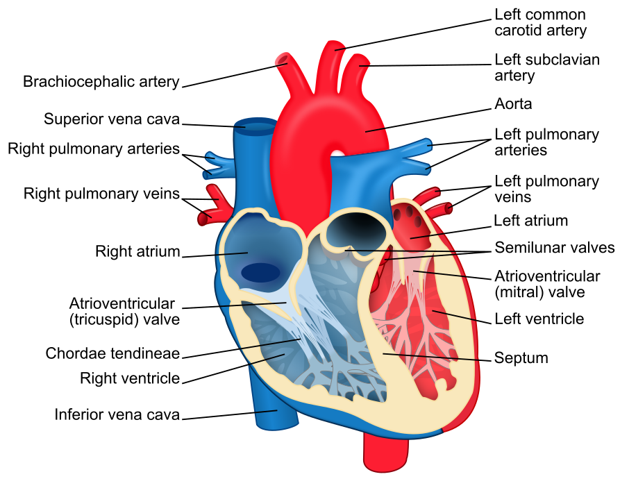

HEART STRUCTURE
Choose a structure
Select a structure name to see a plain-language explanation.
Explore the heart
Choose a structure name below; on wide screens, you can also use numbered points on the illustration. Then follow the path blood takes through the heart and lungs.
Patient-education draft · awaiting Dr. Srikanth Nakka’s review
15 structures · simple explanations
This cutaway diagram is a learning aid. Choose a structure from the list (or, on wide screens, a numbered point). Its explanation appears next to the diagram on wide layouts and below it on smaller screens. The diagram may not show every structure or anatomical variation.

Oxygen-poor pathway Oxygen-rich pathway
Choose a name to read its explanation.
Loading the structure guide…
No matching structure. Try a chamber, valve or blood vessel.
HEART STRUCTURE
Select a structure name to see a plain-language explanation.
About the markers: The sourced illustration labels most chambers and vessels. The coronary arteries are not shown in this image; selecting that item explains their role without suggesting that the diagram depicts them.
A moving-vector guide · no video download
See blood travel to the lungs and back. Follow each stop at your own pace.
Swipe across the route or use the numbered stops. The moving dot follows the blood-flow path.
Simplified path, not to scale. It shows the usual direction of blood flow.
Loading circulation guide…
The full explanation is available as text below the controls.
Play advances the explanation every few seconds. You can pause, step forward or back, or reset at any time.
Medical explanations are drawn from the references linked with each structure and circulation step. The National Heart, Lung, and Blood Institute (NHLBI) provides public information about heart anatomy and blood flow.
Medical reviewer: Dr. Srikanth Nakka — review pending.
Content status: Educational draft; not yet medically reviewed.
Last updated: .
This content is intended for general educational purposes only. It does not replace professional medical advice, diagnosis or treatment. Individual assessment and treatment decisions should be made with a qualified healthcare professional.